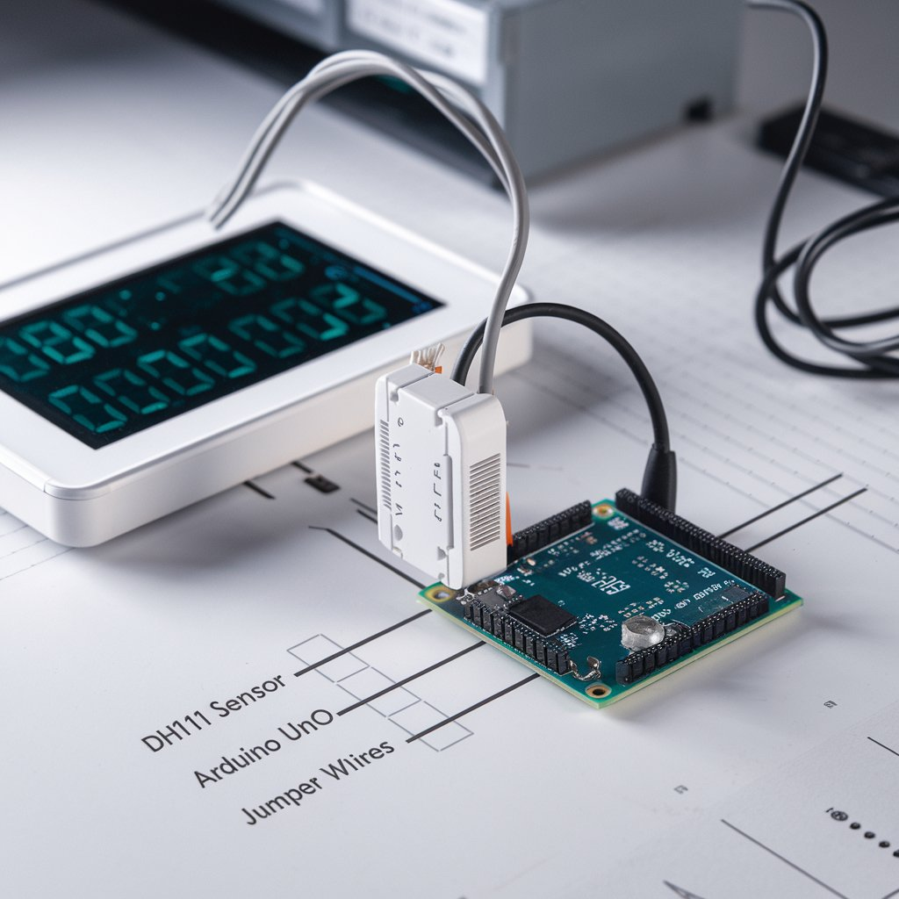

Explore Our Projects Tutorials

Building a Temperature and Humidity Monitor with DHT11 and Arduino
Learn how to build a simple temperature and humidity monitoring system using the DHT11 sensor and Arduino. This project will guide you through the process of wiring the sensor, writing the Arduino code, and displaying real-time environmental data, making it perfect for beginner robotics and electronics enthusiasts. Use this system in weather stations, smart homes, or other environmental monitoring applications.
Read Tutorial
Robotic Arm Design
This tutorial walks you through the process of building a robotic arm for industrial applications.
Read Tutorial
Basic Drone Assembly
Learn how to assemble a simple drone for aerial photography and exploration.
Read Tutorial